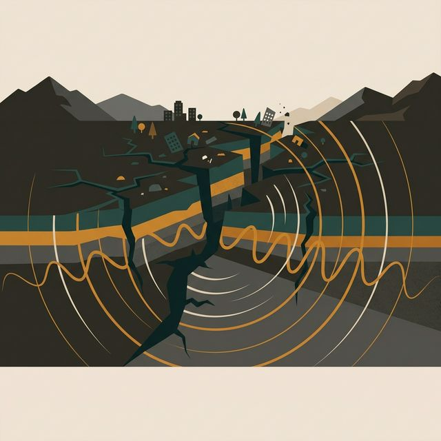

SISTEMA DE ALERTA SÍSMICA
Evalúa las condiciones para emitir la alerta según la lógica proposicional masiva. Criterios de activación del protocolo de emergencia:
Alert = p ∧ (q ∨ r)
Proposición p
Detección de Ondas P
El sismógrafo primario detecta las ondas iniciales generadas por el epicentro.
Proposición q
Confirmación de Red
La red secundaria de sensores distribuidos confirma el evento telúrico.
Proposición r
Magnitud > 5.0
La estimación preliminar de intensidad supera el umbral crítico de 5.0 grados.
SISTEMA EN ESPERA
Interactúa con las proposiciones del sistema para evaluar las condiciones geológicas.
p: Falso
AND
(
q: Falso
OR
r: Falso
)